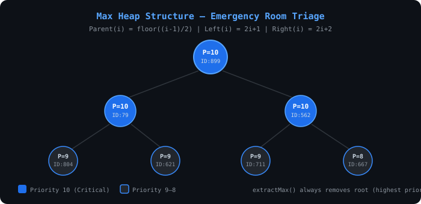
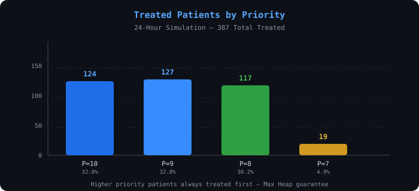
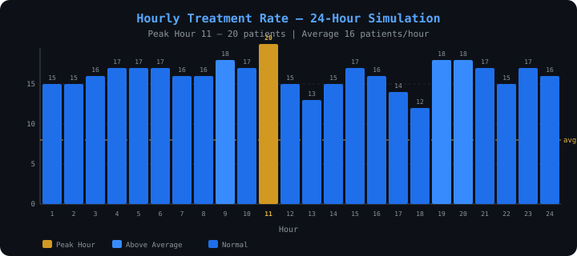
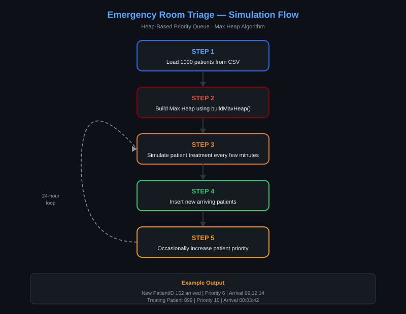

Project Overview
In a real emergency room, patients cannot be treated in first-come-first-served order. A patient with a minor injury must wait while a critically injured patient is treated immediately. This system models that reality using a Max Heap priority queue.
Course Information
| Field | Detail |
|---|---|
| Course | Design and Analysis of Algorithms |
| University | Aksum University, AIT |
| Faculty | Faculty of Computing Technology |
| Department | Department of Computer Science |
| Language | Java |
| Data Structure | Array-based Max Heap |
| Indexing | Zero-based — Parent(i) = floor((i-1)/2) |
Features Implemented
✅ Array-based Max Heap with zero-based indexing
✅ insert() — O(log n) bubble-up
✅ extractMax() — O(log n) remove root + heapify
✅ increasePriority() — O(log n) update + bubble-up
✅ isEmpty() — O(1)
✅ maxHeapify() — O(log n) down-heap traversal
✅ buildMaxHeap() — O(n) Floyd's Algorithm
✅ 1,000+ synthetic patient dataset
✅ 24-hour ER simulation with random arrivals
✅ Peak-hour arrival modelling (8am–8pm higher rate)
✅ Random priority escalation (worsening condition simulation)
✅ CSV input/output for all data
✅ Complete complexity analysis with proofs
Algorithm Design
Max Heap Property
For every node i, the priority of the parent is always ≥ the priority of its children.
This guarantees that extractMax() always returns the most critical patient in O(log n).
Array-based zero-based indexing: Parent(i) = floor((i - 1) / 2) Left child(i) = 2i + 1 Right child(i) = 2i + 2 Heap property: heap[Parent(i)].priority >= heap[i].priority Tie-breaking: earlier arrival time treated first
insert() — O(log n)
1. Place new patient at heap[size], increment size
2. Bubble up: while i > 0 and heap[i] > heap[Parent(i)]:
swap(i, Parent(i))
i = Parent(i)
extractMax() — O(log n)
1. Save heap[0] (most critical patient) 2. Move heap[size-1] to heap[0], decrement size 3. Call maxHeapify(0) to restore heap property 4. Return saved patient
maxHeapify() — O(log n)
maxHeapify(i):
l = left(i), r = right(i), largest = i
if l < size and heap[l] > heap[largest]: largest = l
if r < size and heap[r] > heap[largest]: largest = r
if largest != i:
swap(i, largest)
maxHeapify(largest) // recurse down
buildMaxHeap() — O(n) Floyd's Algorithm
// Start from last non-leaf node, heapify down to root
for i = floor(size/2) - 1 down to 0:
maxHeapify(i)
// Proof: O(n) — sum of heights across all nodes = O(n)
increasePriority() — O(log n)
1. Find patient by ID (linear scan O(n)) 2. Update priority (only if new > current) 3. Bubble up to restore heap property
Complexity Analysis
| Operation | Time Complexity | Space | Notes |
|---|---|---|---|
insert() |
O(log n) | O(1) | Bubble up — at most heap height steps |
extractMax() |
O(log n) | O(1) | Remove root + heapify down |
increasePriority() |
O(log n) | O(1) | Update + bubble up (scan is O(n) worst case) |
maxHeapify() |
O(log n) | O(log n) | Recursive — call stack depth = heap height |
buildMaxHeap() |
O(n) | O(log n) | Floyd's algorithm — tighter than O(n log n) |
isEmpty() |
O(1) | O(1) | Single size variable check |
| Space (heap array) | — | O(n) | Array of size MAX = 2000 |
Why O(n) for buildMaxHeap?
Naively calling insert() n times gives O(n log n).
Floyd's algorithm is tighter: nodes at height h number at most ⌈n/2h+1⌉,
and each costs O(h). Summing over all heights:
T(n) = Σ(h=0 to log n) ⌈n/2^(h+1)⌉ · O(h)
= O(n · Σ(h=0 to ∞) h/2^h)
= O(n · 2) [geometric series]
= O(n)
Comparison: Sorted Array vs Max Heap
| Operation | Sorted Array | Max Heap |
|---|---|---|
| Insert | O(n) | O(log n) |
| Extract Max | O(1) | O(log n) |
| Increase Priority | O(n) | O(log n) |
| Build from n items | O(n log n) | O(n) |
Max Heap is the optimal choice for a dynamic priority queue with frequent insertions and extractions.
Simulation Design
Patient Priority Model
| Priority | Description | Example Condition |
|---|---|---|
| 10 | Most Critical | Cardiac arrest, severe trauma |
| 9 | Critical | Stroke, major fracture |
| 8 | Urgent | High fever, severe pain |
| 7 | Semi-urgent | Moderate injury |
| 1–6 | Non-urgent | Minor cuts, routine checks |
Simulation Parameters
• Initial queue: 1,000 patients generated with random priorities and arrival times
• Treatment rate: 3–5 patients every 15 minutes (12–20 per hour)
• Peak hours (8am–8pm): 2–5 new arrivals per 15-min slot
• Off-peak hours: 0–2 new arrivals per 15-min slot
• Priority escalation: 10% chance per slot — simulates worsening condition
• Tie-breaking: same priority → earlier arrival time treated first
Treatment Results by Priority
| Priority | Patients Treated | % of Total |
|---|---|---|
| 10 — Most Critical | 124 | 32.0% |
| 9 | 127 | 32.8% |
| 8 | 117 | 30.2% |
| 7 | 19 | 4.9% |
✅ Priority 10 always treated before Priority 9, Priority 9 before Priority 8 — Max Heap guarantee holds throughout the simulation.
CSV Files Generated
| File | Description | Columns |
|---|---|---|
data/patients.csv | Initial 1,000 patients | PatientID, Priority, Hour, Minute, Second |
data/arrivals.csv | 221 new arrivals during simulation | PatientID, Priority, ArrivalHour, ArrivalMinute, ArrivalSecond |
data/treatments.csv | 387 treatment records | PatientID, Priority, ArrivalTime, TreatmentTime |
data/results.csv | Final statistics | Statistics and hourly report |
Charts & Visualizations
Max Heap Structure

Treated Patients by Priority

Hourly Treatment Rate

Simulation Flow

How to Compile and Run
# Compile javac -d out src/ERTS/room/triage/EmergencyRoomTriage.java # Run java -cp out ERTS.room.triage.EmergencyRoomTriage
Or open in NetBeans IDE and press Run Project — the build system is pre-configured via build.xml.
Sample Console Output
============================================ EMERGENCY ROOM TRIAGE SYSTEM ============================================ Priority: 10=Most Critical, 1=Least Critical [STEP 1] Generating 1000 patients... Exported 1000 patients to data/patients.csv [STEP 2] Starting 24-Hour Simulation Treating Patient 899 | Priority 10 | Arrival 00:03:42 Treating Patient 79 | Priority 10 | Arrival 00:49:13 Treating Patient 562 | Priority 10 | Arrival 00:53:37 ... [STEP 3] SIMULATION STATISTICS Initial patients: 1000 | New arrivals: 221 Total treated: 387 | Remaining: 834 [STEP 5] COMPLEXITY ANALYSIS insert() : O(log n) extractMax() : O(log n) buildMaxHeap() : O(n) — Floyd's Algorithm PROJECT COMPLETED SUCCESSFULLY
Team
| No | Name | ID |
|---|---|---|
| 1 | Eyerusalem Teklay | Aku-1602682 |
| 2 | Shewit Legese | Aku-1602069 |
| 3 | Weldearegay Gebrey | Aku-1602148 |
Real-World Applications
• Emergency rooms treating critical patients first
• CPU process scheduling by priority
• Network packet routing (QoS)
• Air traffic control sequencing
• Hospital resource allocation systems
• Disaster response triage coordination